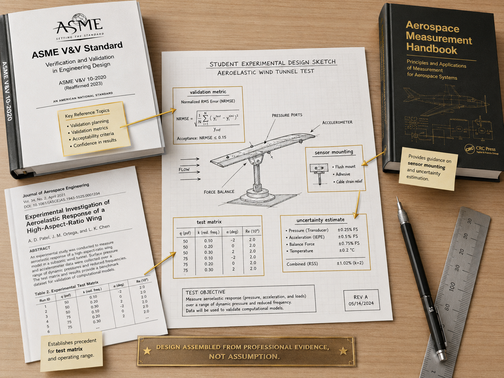
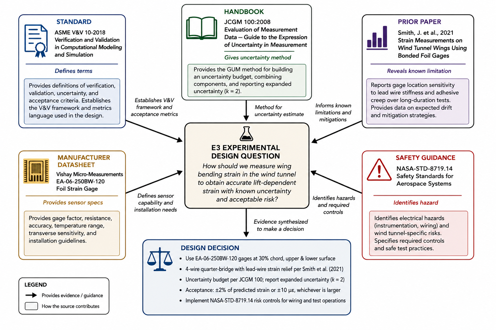

Engineering Standards & Handbooks Resources
How professional experimentalists avoid starting from a blank page
The fastest way to make a weak experimental design sound sophisticated is to invent all of it yourself.
Engineering work is creative, but it is not supposed to be lonely. When aerospace engineers design tests, they do not begin with pure intuition and a blank notebook. They begin by asking what the profession already knows. Which definitions have been standardized? Which uncertainty practices are expected? Which failure modes have been documented? What have prior experiments already taught everyone the hard way? In E3, your experiment may be a paper design, but the professional expectation is the same. You need to show that your design is informed by engineering standards, handbooks, and prior art.

Why this image is here: It frames literature use as a design activity by showing how specific sources feed specific choices in an experimental plan.
Your first task is to choose a standards anchor that fits the claim. Use ASME PTC 19.1 or the GUM for measurement-uncertainty practice. ASME V&V 10-2006 is the legacy computational solid-mechanics guide; ASME V&V 20 addresses computational fluid dynamics and heat transfer. Either V&V document may inform intended-use and model-credibility reasoning when its domain is relevant, but neither is a universal experimental procedure. In your proposal, annotate what each selected source contributes and what it does not establish.
Other standards depend on the measurement domain. AIAA standards may be relevant when the problem is closely tied to aerospace test practice. ASME PTC documents often matter when performance testing and measurement uncertainty are central. ASTM standards are common in materials, mechanical testing, and measurement procedures. MIL-HDBK documents and related technical handbooks can help when aerospace or defense test practice has already collected practical guidance. You do not need a shelf full of citations. You need a few references that genuinely constrain or improve your design.
Prior art is the broader record of existing work: journal papers, technical reports, manufacturer application notes, previous test campaigns, and credible design examples. Prior art helps you identify what is already established, which measurement approaches are common, and where problems remain unresolved. If five prior studies show that mounting stiffness dominates a vibration measurement, your design should not treat mounting as a minor detail. If a manufacturer application note warns that a sensor has strong temperature sensitivity, your uncertainty plan should not ignore temperature.

Why this image is here: It helps you think of citation as an evidence network, where each source earns its place by contributing a distinct part of the design argument.
Handbooks are especially useful because they often sit between formal standards and classroom textbooks. A handbook may not carry the authority of a standard, but it can provide practical measurement advice, typical uncertainty sources, recommended calibration practices, or examples of how uncertainty is propagated in real tests. Coleman and Steele-style uncertainty guidance is valuable here because it connects measurement choices directly to uncertainty analysis, the quantitative backbone of E3.
The most important habit is annotation. A citation should not appear in your report as a decorative object. For each major source, write what the source establishes, how it applies to your proposed experiment, and what it does not answer. For example: "This datasheet provides sensor accuracy and bandwidth specifications used in the MATLAB uncertainty model" is useful. "This article is about strain gauges" is not enough. The annotation is where you demonstrate judgment.
When searching, begin with the physical quantity and the measurement context. "Pressure sensor" is too broad. "Differential pressure measurement uncertainty low-speed wind tunnel" is better. "Accelerometer mounting transverse sensitivity vibration measurement" is better than "best accelerometer." Include the quantity, environment, uncertainty concern, and test purpose in your search terms. That turns the internet from a shopping mall into an engineering library.
The Takeaway: Standards, handbooks, and prior art are design tools. They help you define credible validation logic, justify measurement choices, identify known risks, and show that your E3 experiment is connected to professional engineering practice rather than personal preference.